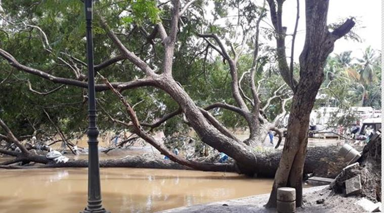
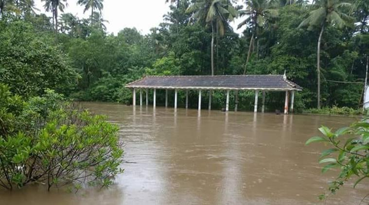

-27th August, 2018. 20:00 hrs.
The devastation caused by the recent flood in Kerala has left its impact upon the Muziris Heritage Project, the state’s grand plan to reinstate the cultural significance of its historic seaport. Although authorities predict that no damage has been caused, the restored remains of the ancient town is now covered in silt and water. “Fortunately no physical damage happened in any of our monuments. The only problem is that there is a lot of silt accumulation in all our monuments like Paliam palace and Kottapuram waterfront,” says P M Nowshad, Managing director of the Muziris Heritage Project.
 Believed to be the largest heritage conservation plan in India, the Muziris Heritage Project started off when a number of excavations and discoveries were made at the small town of Pattanam in Ernakulam district by the Kerala Council of Historical Research. The project has been in operation for close to a decade and aims to reinstate the ancient township that is believed to have been the greatest trading center of the East, dealing with the Greeks, Romans and other parts of the ancient world in commodities such as spices and precious stones.